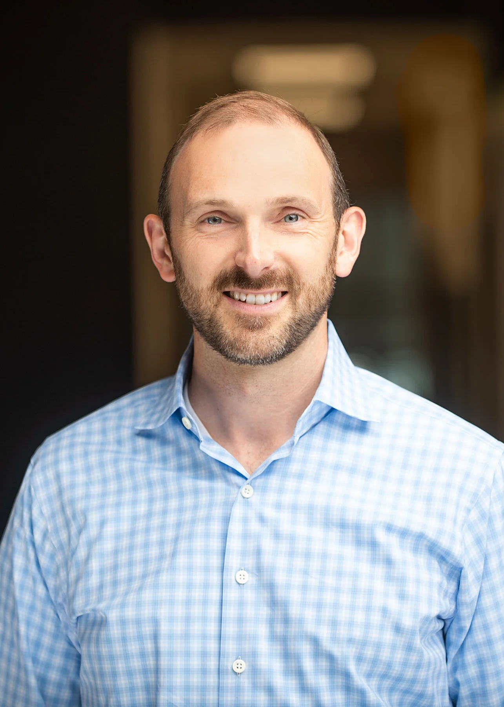

Patrick Byrne
Treasurer
DAS42
Mr. Byrne is responsible for the firm's operational leadership across the company's day-to-day operations, including financial operations, IT infrastructure, real estate, and risk management. Mr. Byrne received his MBA from Yale University's School of Management and his BA in economics from Hobart College.